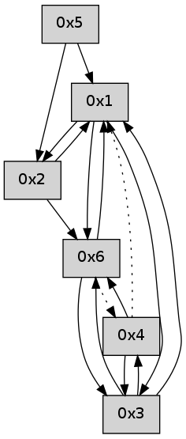

>> << IDX [start] -100 -25 -5 +0 +5 +25 +100 [520.307967186]
 Previous packets
----------------------------------------------------------------------
515.386891 beacon01(adaf) #0 coord=01,02,05,03,04,06 cycle=432.0ms assoc
-- color-indic=0 64 02 85
515.396852 beacon02(adaf) #0 coord=01,02,05,03,04,06 cycle=432.0ms assoc 64 53 7a
515.406851 beacon05(adaf) #0 coord=01,02,05,03,04,06 cycle=432.0ms assoc 64 f5 50
515.416852 beacon03(adaf) #0 coord=01,02,05,03,04,06 cycle=432.0ms assoc 64 69 74
515.426852 beacon04(adaf) #0 coord=01,02,05,03,04,06 cycle=432.0ms assoc 64 cf 5e
515.436854 beacon06(adaf) #0 coord=01,02,05,03,04,06 cycle=432.0ms assoc 64 bb 42
515.448496 [Hello(2): seq=810 sym=1,6 sysInfo= stat=1:1,0,0,0/6:2,0,0,0]
----------------------------------------------------------------------
515.878998 beacon01(adaf) #0 coord=01,02,05,03,04,06 cycle=432.0ms assoc
-- color-indic=0 64 4f 82
515.888959 beacon02(adaf) #0 coord=01,02,05,03,04,06 cycle=432.0ms assoc 64 1e 7d
515.898960 beacon05(adaf) #0 coord=01,02,05,03,04,06 cycle=432.0ms assoc 64 b8 57
515.908960 beacon03(adaf) #0 coord=01,02,05,03,04,06 cycle=432.0ms assoc 64 24 73
515.918961 beacon04(adaf) #0 coord=01,02,05,03,04,06 cycle=432.0ms assoc 64 82 59
515.928960 beacon06(adaf) #0 coord=01,02,05,03,04,06 cycle=432.0ms assoc 64 f6 45
515.940646 [Hello(4): seq=315 sym=3 asym=1 sysInfo= stat=3:14,0,0,0/1:4,0,0,0]
515.946261 [Hello(1): seq=214 sym=2,6 sysInfo= stat=2:4,0,0,0/6:2,0,0,0]
----------------------------------------------------------------------
516.371106 beacon01(adaf) #0 coord=01,02,05,03,04,06 cycle=432.0ms assoc
-- color-indic=0 64 8b ed
516.381066 beacon02(adaf) #0 coord=01,02,05,03,04,06 cycle=432.0ms assoc 64 da 12
516.391067 beacon05(adaf) #0 coord=01,02,05,03,04,06 cycle=432.0ms assoc 64 7c 38
516.401068 beacon03(adaf) #0 coord=01,02,05,03,04,06 cycle=432.0ms assoc 64 e0 1c
516.411067 beacon04(adaf) #0 coord=01,02,05,03,04,06 cycle=432.0ms assoc 64 46 36
516.421068 beacon06(adaf) #0 coord=01,02,05,03,04,06 cycle=432.0ms assoc 64 32 2a
----------------------------------------------------------------------
516.863214 beacon01(adaf) #0 coord=01,02,05,03,04,06 cycle=432.0ms assoc
-- color-indic=0 64 c7 5d
516.873175 beacon02(adaf) #0 coord=01,02,05,03,04,06 cycle=432.0ms assoc 64 96 a2
516.883175 beacon05(adaf) #0 coord=01,02,05,03,04,06 cycle=432.0ms assoc 64 30 88
516.893175 beacon03(adaf) #0 coord=01,02,05,03,04,06 cycle=432.0ms assoc 64 ac ac
516.903175 beacon04(adaf) #0 coord=01,02,05,03,04,06 cycle=432.0ms assoc 64 0a 86
516.913177 beacon06(adaf) #0 coord=01,02,05,03,04,06 cycle=432.0ms assoc 64 7e 9a
516.924845 [Hello(4): seq=316 sym=3 asym=1 sysInfo= stat=3:15,0,0,0/1:5,0,0,0]
516.931905 [Hello(1): seq=215 sym=2,6 sysInfo= stat=2:5,0,0,0/6:2,0,0,0]
----------------------------------------------------------------------
517.355322 beacon01(adaf) #0 coord=01,02,05,03,04,06 cycle=432.0ms assoc
-- color-indic=0 64 03 32
517.365283 beacon02(adaf) #0 coord=01,02,05,03,04,06 cycle=432.0ms assoc 64 52 cd
517.375283 beacon05(adaf) #0 coord=01,02,05,03,04,06 cycle=432.0ms assoc 64 f4 e7
517.385282 beacon03(adaf) #0 coord=01,02,05,03,04,06 cycle=432.0ms assoc 64 68 c3
517.395284 beacon04(adaf) #0 coord=01,02,05,03,04,06 cycle=432.0ms assoc 64 ce e9
----------------------------------------------------------------------
517.847430 beacon01(adaf) #0 coord=01,02,05,03,04,06 cycle=432.0ms assoc
-- color-indic=0 64 5d 53
517.857391 beacon02(adaf) #0 coord=01,02,05,03,04,06 cycle=432.0ms assoc 64 0c ac
517.867391 beacon05(adaf) #0 coord=01,02,05,03,04,06 cycle=432.0ms assoc 64 aa 86
517.877392 beacon03(adaf) #0 coord=01,02,05,03,04,06 cycle=432.0ms assoc 64 36 a2
517.887391 beacon04(adaf) #0 coord=01,02,05,03,04,06 cycle=432.0ms assoc 64 90 88
517.897392 beacon06(adaf) #0 coord=01,02,05,03,04,06 cycle=432.0ms assoc 64 e4 94
517.909080 [Hello(4): seq=317 asym=3,1 sysInfo= stat=3:0,0,0,0/1:6,0,0,0]
517.913090 [Hello(1): seq=216 sym=2,6 sysInfo= stat=2:6,0,0,0/6:2,0,0,0]
----------------------------------------------------------------------
518.339538 beacon01(adaf) #0 coord=01,02,05,03,04,06 cycle=432.0ms assoc
-- color-indic=0 64 99 3c
518.359500 beacon05(adaf) #0 coord=01,02,05,03,04,06 cycle=432.0ms assoc 64 6e e9
518.389500 beacon06(adaf) #0 coord=01,02,05,03,04,06 cycle=432.0ms assoc 64 20 fb
518.400960 [Hello(3): seq=317 sym=4,6 asym=1 sysInfo= stat=4:0,0,0,0/6:0,0,0,0/1:5,0,0,0]
518.404835 [Hello(6): seq=232 sym=3,1 asym=4 sysInfo= stat=3:0,0,0,0/1:8,0,0,0/4:0,0,0,0]
----------------------------------------------------------------------
518.831645 beacon01(adaf) #0 coord=01,02,05,03,04,06 cycle=432.0ms assoc
-- color-indic=0 64 d5 8c
518.841607 beacon02(adaf) #0 coord=01,02,05,03,04,06 cycle=432.0ms assoc 64 84 73
518.851606 beacon05(adaf) #0 coord=01,02,05,03,04,06 cycle=432.0ms assoc 64 22 59
518.861607 beacon03(adaf) #0 coord=01,02,05,03,04,06 cycle=432.0ms assoc 64 be 7d
518.871607 beacon04(adaf) #0 coord=01,02,05,03,04,06 cycle=432.0ms assoc 64 18 57
518.881608 beacon06(adaf) #0 coord=01,02,05,03,04,06 cycle=432.0ms assoc 64 6c 4b
518.893290 [Hello(4): seq=318 sym=6,3 asym=1 sysInfo= stat=6:0,0,0,0/3:1,0,0,0/1:7,0,0,0]
518.895552 [Hello(1): seq=217 sym=2,6,3 sysInfo= stat=2:6,0,0,0/6:3,0,0,0/3:0,0,0,0]
----------------------------------------------------------------------
519.323753 beacon01(adaf) #0 coord=01,02,05,03,04,06 cycle=432.0ms assoc
-- color-indic=0 64 11 e3
519.333713 beacon02(adaf) #0 coord=01,02,05,03,04,06 cycle=432.0ms assoc 64 40 1c
519.343713 beacon05(adaf) #0 coord=01,02,05,03,04,06 cycle=432.0ms assoc 64 e6 36
519.353715 beacon03(adaf) #0 coord=01,02,05,03,04,06 cycle=432.0ms assoc 64 7a 12
519.363715 beacon04(adaf) #0 coord=01,02,05,03,04,06 cycle=432.0ms assoc 64 dc 38
519.373715 beacon06(adaf) #0 coord=01,02,05,03,04,06 cycle=432.0ms assoc 64 a8 24
519.385383 [Hello(3): seq=318 sym=4,6,1 sysInfo= stat=4:1,0,0,0/6:1,0,0,0/1:6,0,0,0]
----------------------------------------------------------------------
519.815860 beacon01(adaf) #0 coord=01,02,05,03,04,06 cycle=432.0ms assoc
-- color-indic=0 64 5c e4
519.825822 beacon02(adaf) #0 coord=01,02,05,03,04,06 cycle=432.0ms assoc 64 0d 1b
519.835821 beacon05(adaf) #0 coord=01,02,05,03,04,06 cycle=432.0ms assoc 64 ab 31
519.845822 beacon03(adaf) #0 coord=01,02,05,03,04,06 cycle=432.0ms assoc 64 37 15
519.855821 beacon04(adaf) #0 coord=01,02,05,03,04,06 cycle=432.0ms assoc 64 91 3f
519.865821 beacon06(adaf) #0 coord=01,02,05,03,04,06 cycle=432.0ms assoc 64 e5 23
519.876917 [Hello(1): seq=218 sym=2,6,3 sysInfo= stat=2:6,0,0,0/6:4,0,0,0/3:0,0,0,0]
519.881172 [Hello(4): seq=319 sym=6,3 asym=1 sysInfo= stat=6:0,0,0,0/3:1,0,0,0/1:8,0,0,0]